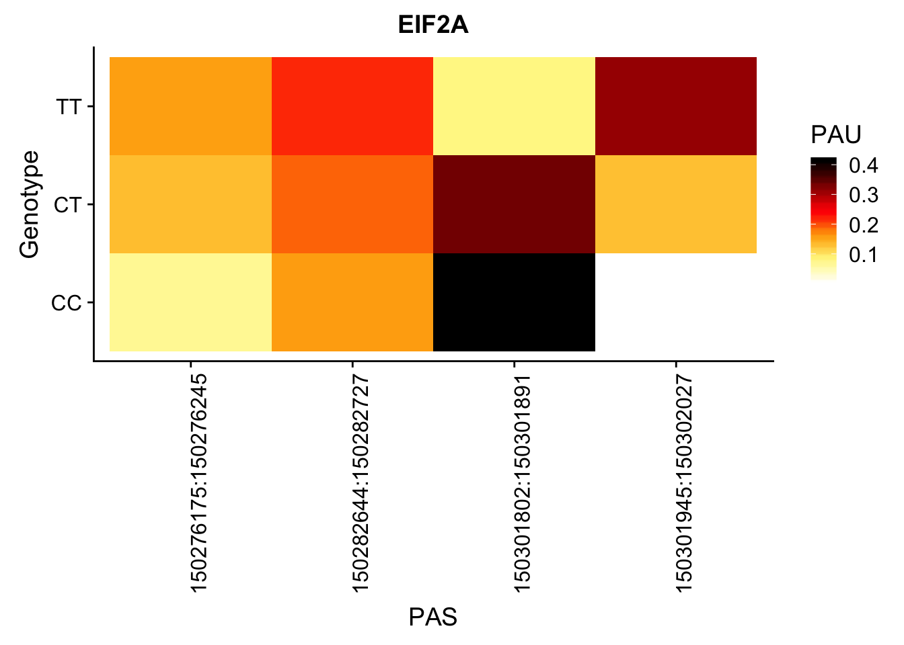

Last updated: 2019-04-03
Checks: 6 0
Knit directory: threeprimeseq/analysis/
This reproducible R Markdown analysis was created with workflowr (version 1.2.0). The Report tab describes the reproducibility checks that were applied when the results were created. The Past versions tab lists the development history.
Great! Since the R Markdown file has been committed to the Git repository, you know the exact version of the code that produced these results.
Great job! The global environment was empty. Objects defined in the global environment can affect the analysis in your R Markdown file in unknown ways. For reproduciblity it’s best to always run the code in an empty environment.
The command set.seed(12345) was run prior to running the code in the R Markdown file. Setting a seed ensures that any results that rely on randomness, e.g. subsampling or permutations, are reproducible.
Great job! Recording the operating system, R version, and package versions is critical for reproducibility.
Nice! There were no cached chunks for this analysis, so you can be confident that you successfully produced the results during this run.
Great! You are using Git for version control. Tracking code development and connecting the code version to the results is critical for reproducibility. The version displayed above was the version of the Git repository at the time these results were generated.
Note that you need to be careful to ensure that all relevant files for the analysis have been committed to Git prior to generating the results (you can use wflow_publish or wflow_git_commit). workflowr only checks the R Markdown file, but you know if there are other scripts or data files that it depends on. Below is the status of the Git repository when the results were generated:
Ignored files:
Ignored: .DS_Store
Ignored: .Rhistory
Ignored: .Rproj.user/
Ignored: data/.DS_Store
Ignored: data/perm_QTL_trans_noMP_5percov/
Ignored: output/.DS_Store
Untracked files:
Untracked: KalistoAbundance18486.txt
Untracked: analysis/4suDataIGV.Rmd
Untracked: analysis/AdaptTonyExampleplots.Rmd
Untracked: analysis/DirectionapaQTL.Rmd
Untracked: analysis/EvaleQTLs.Rmd
Untracked: analysis/YL_QTL_test.Rmd
Untracked: analysis/groSeqAnalysis.Rmd
Untracked: analysis/ncbiRefSeq_sm.sort.mRNA.bed
Untracked: analysis/peaksWithMisprimming.Rmd
Untracked: analysis/snake.config.notes.Rmd
Untracked: analysis/verifyBAM.Rmd
Untracked: analysis/verifybam_dubs.Rmd
Untracked: code/PeaksToCoverPerReads.py
Untracked: code/strober_pc_pve_heatmap_func.R
Untracked: data/18486.genecov.txt
Untracked: data/APApeaksYL.total.inbrain.bed
Untracked: data/AllPeak_counts/
Untracked: data/ApaQTLs/
Untracked: data/ApaQTLs_otherPhen/
Untracked: data/CTCF/
Untracked: data/ChromHmmOverlap/
Untracked: data/DistTXN2Peak_genelocAnno/
Untracked: data/EmpiricalDists/
Untracked: data/ExampleQTLplot2/
Untracked: data/FeatureoverlapPeaks/
Untracked: data/GM12878.chromHMM.bed
Untracked: data/GM12878.chromHMM.txt
Untracked: data/GWAS_overlap/
Untracked: data/LianoglouLCL/
Untracked: data/LocusZoom/
Untracked: data/LocusZoom_Unexp/
Untracked: data/LocusZoom_proc/
Untracked: data/MatchedSnps/
Untracked: data/NucSpecQTL/
Untracked: data/NuclearApaQTLs.txt
Untracked: data/PeakCounts/
Untracked: data/PeakCounts_noMP_5perc/
Untracked: data/PeakCounts_noMP_genelocanno/
Untracked: data/PeakUsage/
Untracked: data/PeakUsage_noMP/
Untracked: data/PeakUsage_noMP_GeneLocAnno/
Untracked: data/PeaksUsed/
Untracked: data/PeaksUsed_noMP_5percCov/
Untracked: data/PolyA_DB/
Untracked: data/QTL_overlap/
Untracked: data/RNAdecay/
Untracked: data/RNAkalisto/
Untracked: data/RefSeq_annotations/
Untracked: data/Replicates_usage/
Untracked: data/Signal_Loc/
Untracked: data/TotalApaQTLs.txt
Untracked: data/Totalpeaks_filtered_clean.bed
Untracked: data/UnderstandPeaksQC/
Untracked: data/WASP_STAT/
Untracked: data/YL-SP-18486-T-combined-genecov.txt
Untracked: data/YL-SP-18486-T_S9_R1_001-genecov.txt
Untracked: data/YL_QTL_test/
Untracked: data/apaExamp/
Untracked: data/apaExamp_proc/
Untracked: data/apaQTL_examp_noMP/
Untracked: data/bedgraph_peaks/
Untracked: data/bin200.5.T.nuccov.bed
Untracked: data/bin200.Anuccov.bed
Untracked: data/bin200.nuccov.bed
Untracked: data/clean_peaks/
Untracked: data/comb_map_stats.csv
Untracked: data/comb_map_stats.xlsx
Untracked: data/comb_map_stats_39ind.csv
Untracked: data/combined_reads_mapped_three_prime_seq.csv
Untracked: data/diff_iso_GeneLocAnno/
Untracked: data/diff_iso_proc/
Untracked: data/diff_iso_trans/
Untracked: data/eQTL_inAPA/
Untracked: data/eQTLs_Lietal/
Untracked: data/ensemble_to_genename.txt
Untracked: data/example_gene_peakQuant/
Untracked: data/explainProtVar/
Untracked: data/filtPeakOppstrand_cov_noMP_GeneLocAnno_5perc/
Untracked: data/filtered_APApeaks_merged_allchrom_refseqTrans.closest2End.bed
Untracked: data/filtered_APApeaks_merged_allchrom_refseqTrans.closest2End.noties.bed
Untracked: data/first50lines_closest.txt
Untracked: data/gencov.test.csv
Untracked: data/gencov.test.txt
Untracked: data/gencov_zero.test.csv
Untracked: data/gencov_zero.test.txt
Untracked: data/gene_cov/
Untracked: data/joined
Untracked: data/leafcutter/
Untracked: data/merged_combined_YL-SP-threeprimeseq.bg
Untracked: data/molPheno_noMP/
Untracked: data/mol_overlap/
Untracked: data/mol_pheno/
Untracked: data/nom_QTL/
Untracked: data/nom_QTL_opp/
Untracked: data/nom_QTL_trans/
Untracked: data/nuc6up/
Untracked: data/nuc_10up/
Untracked: data/other_qtls/
Untracked: data/pQTL_inAPA/
Untracked: data/pQTL_otherphen/
Untracked: data/pacbio_cov/
Untracked: data/peakPerRefSeqGene/
Untracked: data/peaks4DT/
Untracked: data/perm_QTL/
Untracked: data/perm_QTL_GeneLocAnno_noMP_5percov/
Untracked: data/perm_QTL_GeneLocAnno_noMP_5percov_3UTR/
Untracked: data/perm_QTL_diffWindow/
Untracked: data/perm_QTL_opp/
Untracked: data/perm_QTL_trans/
Untracked: data/perm_QTL_trans_filt/
Untracked: data/protAndAPAAndExplmRes.Rda
Untracked: data/protAndAPAlmRes.Rda
Untracked: data/protAndExpressionlmRes.Rda
Untracked: data/reads_mapped_three_prime_seq.csv
Untracked: data/smash.cov.results.bed
Untracked: data/smash.cov.results.csv
Untracked: data/smash.cov.results.txt
Untracked: data/smash_testregion/
Untracked: data/ssFC200.cov.bed
Untracked: data/temp.file1
Untracked: data/temp.file2
Untracked: data/temp.gencov.test.txt
Untracked: data/temp.gencov_zero.test.txt
Untracked: data/threePrimeSeqMetaData.csv
Untracked: data/threePrimeSeqMetaData55Ind.txt
Untracked: data/threePrimeSeqMetaData55Ind.xlsx
Untracked: data/threePrimeSeqMetaData55Ind_noDup.txt
Untracked: data/threePrimeSeqMetaData55Ind_noDup.xlsx
Untracked: data/threePrimeSeqMetaData55Ind_noDup_WASPMAP.txt
Untracked: data/threePrimeSeqMetaData55Ind_noDup_WASPMAP.xlsx
Untracked: data/threePrimeSeqMetaData55Ind_redobatch4.xlsx
Untracked: data/~$threePrimeSeqMetaData55Ind_redobatch4.xlsx
Untracked: manuscript/
Untracked: output/APAqtlExamp/
Untracked: output/LZ/
Untracked: output/deeptools_plots/
Untracked: output/picard/
Untracked: output/plots/
Untracked: output/qual.fig2.pdf
Unstaged changes:
Modified: analysis/28ind.peak.explore.Rmd
Modified: analysis/CompareLianoglouData.Rmd
Modified: analysis/HistoneModandPAS.Rmd
Modified: analysis/NewPeakPostMP.Rmd
Modified: analysis/NuclearSpecQTL.Rmd
Modified: analysis/PeakToXper.Rmd
Modified: analysis/RNAdecayAndAPA.Rmd
Modified: analysis/apaQTLoverlapGWAS.Rmd
Modified: analysis/characterize_apaQTLs.Rmd
Modified: analysis/cleanupdtseq.internalpriming.Rmd
Modified: analysis/coloc_apaQTLs_protQTLs.Rmd
Modified: analysis/dif.iso.usage.leafcutter.Rmd
Modified: analysis/diffIsoAnalysisNewMapping.Rmd
Modified: analysis/diff_iso_pipeline.Rmd
Modified: analysis/explainpQTLs.Rmd
Modified: analysis/explore.filters.Rmd
Modified: analysis/fixBWChromNames.Rmd
Modified: analysis/flash2mash.Rmd
Modified: analysis/initialPacBioQuant.Rmd
Modified: analysis/mispriming_approach.Rmd
Modified: analysis/overlapMolQTL.Rmd
Modified: analysis/overlapMolQTL.opposite.Rmd
Modified: analysis/overlap_qtls.Rmd
Modified: analysis/peakOverlap_oppstrand.Rmd
Modified: analysis/peakQCPPlots.Rmd
Modified: analysis/pheno.leaf.comb.Rmd
Modified: analysis/pipeline_55Ind.Rmd
Modified: analysis/swarmPlots_QTLs.Rmd
Modified: analysis/test.max2.Rmd
Modified: analysis/test.smash.Rmd
Modified: analysis/understandPeaks.Rmd
Modified: analysis/unexplainedeQTL_analysis.Rmd
Modified: code/Snakefile
Note that any generated files, e.g. HTML, png, CSS, etc., are not included in this status report because it is ok for generated content to have uncommitted changes.
These are the previous versions of the R Markdown and HTML files. If you’ve configured a remote Git repository (see ?wflow_git_remote), click on the hyperlinks in the table below to view them.
| File | Version | Author | Date | Message |
|---|---|---|---|---|
| Rmd | 1fb3ca5 | Briana Mittleman | 2019-04-03 | add boxplot to script |
| html | 69a8526 | Briana Mittleman | 2019-04-02 | Build site. |
| Rmd | c4062e5 | Briana Mittleman | 2019-04-02 | add general script |
| html | 5244c0f | Briana Mittleman | 2019-03-26 | Build site. |
| Rmd | 01af963 | Briana Mittleman | 2019-03-26 | add example heatmap code |
library(tidyverse)── Attaching packages ──────────────────────────────────────────────────────────── tidyverse 1.2.1 ──✔ ggplot2 3.1.0 ✔ purrr 0.3.1
✔ tibble 2.0.1 ✔ dplyr 0.8.0.1
✔ tidyr 0.8.3 ✔ stringr 1.4.0
✔ readr 1.3.1 ✔ forcats 0.4.0 Warning: package 'tibble' was built under R version 3.5.2Warning: package 'tidyr' was built under R version 3.5.2Warning: package 'purrr' was built under R version 3.5.2Warning: package 'dplyr' was built under R version 3.5.2Warning: package 'stringr' was built under R version 3.5.2Warning: package 'forcats' was built under R version 3.5.2── Conflicts ─────────────────────────────────────────────────────────────── tidyverse_conflicts() ──
✖ dplyr::filter() masks stats::filter()
✖ dplyr::lag() masks stats::lag()library(reshape2)
Attaching package: 'reshape2'The following object is masked from 'package:tidyr':
smithslibrary(cowplot)Warning: package 'cowplot' was built under R version 3.5.2
Attaching package: 'cowplot'The following object is masked from 'package:ggplot2':
ggsaveStart with EIF2a example:
3 150302009 150302010 peak114357:EIF2A 5.39078186842105e-07 +
Get the phenotype
less /project2/gilad/briana/threeprimeseq/data/phenotypes_filtPeakTranscript_noMP_GeneLocAnno_5percUs/filtered_APApeaks_merged_allchrom_refseqGenes.GeneLocAnno_NoMP_sm_quant.Total.fixed.pheno_5perc.fc.gz | grep EIF2A_ > /project2/gilad/briana/threeprimeseq/data/ExampleQTLPlots2/EIF2a_TotalPeaksPheno.txt
less chr3.dose.filt.vcf.gz | grep 3:150302010 > /project2/gilad/briana/threeprimeseq/data/ExampleQTLPlots2/EIF2a_TotalPeaksGenotype.txt
less chr3.dose.filt.vcf.gz | head -n14 | tail -n1 > /project2/gilad/briana/threeprimeseq/data/ExampleQTLPlots2/genotypeHeader.txtphenohead=read.table("../data/ExampleQTLplot2/Phenotypeheader.txt", header = T,stringsAsFactors = F)
phenoEIF=read.table("../data/ExampleQTLplot2/EIF2a_TotalPeaksPheno.txt", col.names =colnames(phenohead),stringsAsFactors = F)
meltpheno=melt(phenoEIF, id.vars = "chrom", value.name = "Ratio", variable.name = "Individual") %>% separate(Ratio, into=c("num", "denom"), sep="/") %>% separate(chrom, into=c("chrom", "start", "end", "peakID"),sep=":") %>% mutate(PeakLoc=paste(start, end, sep=":"))
meltpheno$Individual= as.character(meltpheno$Individual)
meltpheno$num= as.numeric(meltpheno$num)
meltpheno$denom=as.numeric(meltpheno$denom)I want to join the genotype.
genoHead=read.table("../data/ExampleQTLplot2/genotypeHeader.txt", header = T,stringsAsFactors = F)
genoEIF=read.table("../data/ExampleQTLplot2/EIF2a_TotalPeaksGenotype.txt", col.names =colnames(genoHead),stringsAsFactors = F ) %>% select(ID,contains("NA"))
lettersGeno=read.table("../data/ExampleQTLplot2/EIF2a_TotalPeaksGenotype.txt", col.names =colnames(genoHead),stringsAsFactors = F, colClasses = c("character") ) %>% select(REF, ALT)
refAllele=as.character(lettersGeno$REF)
altAllele=as.character(lettersGeno$ALT)
genoMelt=melt(genoEIF, id.vars = "ID", value.name = "FullGeno", variable.name = "Individual" ) %>% separate(FullGeno, into=c("geno","dose","extra1"), sep=":") %>% select(Individual, dose) %>% mutate(genotype=ifelse(round(as.integer(dose))==0, paste(refAllele, refAllele, sep=""), ifelse(round(as.integer(dose))==1, paste(refAllele,altAllele, sep=""), paste(altAllele,altAllele,sep=""))))
genoMelt$Individual= as.character(genoMelt$Individual)Join these:
PhenandGene= meltpheno %>% inner_join(genoMelt, by="Individual") %>% group_by(PeakLoc, genotype) %>% summarise(SumNum=sum(num), SumDenom=sum(denom)) %>% mutate(PAU=SumNum/SumDenom)Check sums
Groupsumscheck = PhenandGene %>% group_by(genotype) %>% summarise(SUM=sum(PAU))my_palette <- colorRampPalette(c("white", "khaki1", "orange", "red", "darkred", "black"))
eif2aplot=ggplot(PhenandGene, aes(PeakLoc, genotype)) + geom_tile(aes(fill = PAU))+ scale_fill_gradientn(colors =my_palette(100)) + labs(title="EIF2A", y="Genotype",x="PAS")+theme(axis.text.x = element_text(angle = 90, hjust = 1))
eif2aplot
ggsave(eif2aplot, file="../output/plots/testEIF2A.png",height = 10, width = 10)I want the script to take a fraction, gene, chr, a snp (chr:loc)
steps: * get phenotypes from /project2/gilad/briana/threeprimeseq/data/phenotypes_filtPeakTranscript_noMP_GeneLocAnno_5percUs/filtered_APApeaks_merged_allchrom_refseqGenes.GeneLocAnno_NoMP_sm_quant.Total.fixed.pheno_5perc.fc.gz and /project2/gilad/briana/threeprimeseq/data/phenotypes_filtPeakTranscript_noMP_GeneLocAnno_5percUs/filtered_APApeaks_merged_allchrom_refseqGenes.GeneLocAnno_NoMP_sm_quant.Nuclear.fixed.pheno_5perc.fc.gz * get genotype from /project2/gilad/briana/YRI_geno_hg19/chrX.dose.filt.vcf.gz *rscript for making plot
I will write the rscript first:
makeQTLheatmap.R
library(tidyverse)
library(reshape2)
library(optparse)
library(cowplot)
option_list = list(
make_option(c("-P", "--pheno"), action="store", default=NA, type='character',
help="input pheno file"),
make_option(c("-G", "--geno"), action="store", default=NA, type='character',
help="input genotype"),
make_option(c("-g", "--gene"), action="store", default=NA, type='character',
help="gene"),
make_option(c("-o", "--output"), action="store", default=NA, type='character',
help="output file for plot")
)
opt_parser <- OptionParser(option_list=option_list)
opt <- parse_args(opt_parser)
phenohead=read.table("/project2/gilad/briana/threeprimeseq/data/ExampleQTLPlots2/Phenotypeheader.txt", header = T,stringsAsFactors = F)
pheno=read.table(opt$pheno, col.names =colnames(phenohead),stringsAsFactors = F)
meltpheno=melt(pheno, id.vars = "chrom", value.name = "Ratio", variable.name = "Individual") %>% separate(Ratio, into=c("num", "denom"), sep="/") %>% separate(chrom, into=c("chrom", "start", "end", "peakID"),sep=":") %>% mutate(PeakLoc=paste(start, end, sep=":"))
meltpheno$Individual= as.character(meltpheno$Individual)
meltpheno$num= as.numeric(meltpheno$num)
meltpheno$denom=as.numeric(meltpheno$denom)
genoHead=read.table("/project2/gilad/briana/threeprimeseq/data/ExampleQTLPlots2/genotypeHeader.txt", header = T,stringsAsFactors = F)
geno=read.table(opt$geno, col.names =colnames(genoHead),stringsAsFactors = F ) %>% select(ID,contains("NA"))
lettersGeno=read.table(opt$geno, col.names =colnames(genoHead),stringsAsFactors = F,colClasses = c("character")) %>% select(REF, ALT)
refAllele=lettersGeno$REF
altAllele=lettersGeno$ALT
genoMelt=melt(geno, id.vars = "ID", value.name = "FullGeno", variable.name = "Individual" ) %>% separate(FullGeno, into=c("geno","dose","extra1"), sep=":") %>% select(Individual, dose) %>% mutate(genotype=ifelse(round(as.integer(dose))==0, paste(refAllele, refAllele, sep=""), ifelse(round(as.integer(dose))==1, paste(refAllele,altAllele, sep=""), paste(altAllele,altAllele,sep=""))))
genoMelt$Individual= as.character(genoMelt$Individual)
PhenandGene= meltpheno %>% inner_join(genoMelt, by="Individual") %>% group_by(PeakLoc, genotype) %>% summarise(SumNum=sum(num), SumDenom=sum(denom)) %>% mutate(PAU=SumNum/SumDenom)
my_palette <- colorRampPalette(c("white", "khaki1", "orange", "red", "darkred", "black"))
heatplot=ggplot(PhenandGene, aes(PeakLoc, genotype)) + geom_tile(aes(fill = PAU))+ scale_fill_gradientn(colors =my_palette(100)) + labs(title=opt$gene, y="Genotype" , x= "PAS") + theme(axis.text.x = element_text(angle = 90, hjust = 1))
ggsave(plot=heatplot, filename=opt$output, height=10, width=10)qtlHeatmap.sh
#!/bin/bash
#SBATCH --job-name=qtlHeatmap
#SBATCH --account=pi-yangili1
#SBATCH --time=24:00:00
#SBATCH --output=qtlHeatmap.out
#SBATCH --error=qtlHeatmap.err
#SBATCH --partition=bigmem2
#SBATCH --mem=100G
#SBATCH --mail-type=END
module load Anaconda3
source activate three-prime-env
Fraction=$1
gene=$2
chrom=$3
snp=$4
less /project2/gilad/briana/threeprimeseq/data/phenotypes_filtPeakTranscript_noMP_GeneLocAnno_5percUs/filtered_APApeaks_merged_allchrom_refseqGenes.GeneLocAnno_NoMP_sm_quant.${Fraction}.fixed.pheno_5perc.fc.gz | grep ${gene}_ > /project2/gilad/briana/threeprimeseq/data/ExampleQTLPlots2/${gene}_${Fraction}PeaksPheno.txt
less /project2/gilad/briana/YRI_geno_hg19/chr${chrom}.dose.filt.vcf.gz | grep ${snp} > /project2/gilad/briana/threeprimeseq/data/ExampleQTLPlots2/${gene}_${Fraction}PeaksGenotype.txt
Rscript makeQTLheatmap.R -P /project2/gilad/briana/threeprimeseq/data/ExampleQTLPlots2/${gene}_${Fraction}PeaksPheno.txt -G /project2/gilad/briana/threeprimeseq/data/ExampleQTLPlots2/${gene}_${Fraction}PeaksGenotype.txt -g ${gene} -o /project2/gilad/briana/threeprimeseq/data/ExampleQTLPlots2/${gene}_${Fraction}_${SNP}.pngtotalQTLs=read.table("../data/ApaQTLs/TotalapaQTLs.GeneLocAnno.noMP.5perc.10FDR.txt", header=F)14:65401627:65401711:CHURC1_-_peak48994
14:65389250
sbatch qtlHeatmap.sh "Total" "CHURC1" "14" "14:65389250"12:57489617:57489715:STAT6_+_peak36983 12:57489648
sbatch qtlHeatmap.sh "Total" "STAT6" "12" "12:57489648"Try a nuclear one:
nucQTLs=read.table("../data/ApaQTLs/NuclearapaQTLs.GeneLocAnno.noMP.5perc.10FDR.txt", header=F)19:4688114:4688228:DPP9_+_peak77244
19:4680128
sbatch qtlHeatmap.sh "Nuclear" "DPP9" "19" "19:4680128"4:83355978:83356052:ENOPH1_-_peak121076 4:83352186
sbatch qtlHeatmap.sh "Nuclear" "ENOPH1" "4" "4:83352186"pheno_qtlpeak=meltpheno %>% filter(grepl("peak114357", peakID)) %>% mutate(PAU=num/denom) %>% select(Individual, PeakLoc,PAU)
PhenandGene_qtl= pheno_qtlpeak %>% inner_join(genoMelt, by="Individual")
eif2aqtlplot=ggplot(PhenandGene_qtl, aes(x=genotype, y=PAU, fill=genotype)) + geom_boxplot(width=.45) + geom_jitter() + scale_fill_brewer(palette = "YlOrRd")
ggsave(eif2aqtlplot, file="../output/APAqtlExamp/eif2aboxplot.png", height = 10, width=10)Make an R script that will be added to the make the heatmap too
apaqtlboxplot.R
library(tidyverse)
library(reshape2)
library(optparse)
library(cowplot)
option_list = list(
make_option(c("-P", "--pheno"), action="store", default=NA, type='character',
help="input pheno file"),
make_option(c("-G", "--geno"), action="store", default=NA, type='character',
help="input genotype"),
make_option(c("-g", "--gene"), action="store", default=NA, type='character',
help="gene"),
make_option(c("-p", "--peakID"), action="store", default=NA, type='character',
help="peakID"),
make_option(c("-o", "--output"), action="store", default=NA, type='character',
help="output file for plot")
)
opt_parser <- OptionParser(option_list=option_list)
opt <- parse_args(opt_parser)
opt_parser <- OptionParser(option_list=option_list)
opt <- parse_args(opt_parser)
phenohead=read.table("/project2/gilad/briana/threeprimeseq/data/ExampleQTLPlots2/Phenotypeheader.txt", header = T,stringsAsFactors = F)
pheno=read.table(opt$pheno, col.names =colnames(phenohead),stringsAsFactors = F)
meltpheno=melt(pheno, id.vars = "chrom", value.name = "Ratio", variable.name = "Individual") %>% separate(Ratio, into=c("num", "denom"), sep="/") %>% separate(chrom, into=c("chrom", "start", "end", "peakID"),sep=":") %>% mutate(PeakLoc=paste(start, end, sep=":"))
meltpheno$Individual= as.character(meltpheno$Individual)
meltpheno$num= as.numeric(meltpheno$num)
meltpheno$denom=as.numeric(meltpheno$denom)
genoHead=read.table("/project2/gilad/briana/threeprimeseq/data/ExampleQTLPlots2/genotypeHeader.txt", header = T,stringsAsFactors = F)
geno=read.table(opt$geno, col.names =colnames(genoHead),stringsAsFactors = F ) %>% select(ID,contains("NA"))
lettersGeno=read.table(opt$geno, col.names =colnames(genoHead),stringsAsFactors = F,colClasses = c("character")) %>% select(REF, ALT)
refAllele=lettersGeno$REF
altAllele=lettersGeno$ALT
genoMelt=melt(geno, id.vars = "ID", value.name = "FullGeno", variable.name = "Individual" ) %>% separate(FullGeno, into=c("geno","dose","extra1"), sep=":") %>% select(Individual, dose) %>% mutate(genotype=ifelse(round(as.integer(dose))==0, paste(refAllele, refAllele, sep=""), ifelse(round(as.integer(dose))==1, paste(refAllele,altAllele, sep=""), paste(altAllele,altAllele,sep=""))))
genoMelt$Individual= as.character(genoMelt$Individual)
pheno_qtlpeak=meltpheno %>% filter(grepl(opt$peakID, peakID)) %>% mutate(PAU=num/denom) %>% select(Individual, PeakLoc,PAU)
PhenandGene_qtl= pheno_qtlpeak %>% inner_join(genoMelt, by="Individual")
qtlplot=ggplot(PhenandGene_qtl, aes(x=genotype, y=PAU, fill=genotype)) + geom_boxplot(width=.45) + geom_jitter() + scale_fill_brewer(palette = "YlOrRd")
ggsave(plot=qtlplot, filename=opt$output, height=10, width=10)qtlHeatmapandBoxplot.sh
#!/bin/bash
#SBATCH --job-name=qtlHeatmapandBoxplot
#SBATCH --account=pi-yangili1
#SBATCH --time=24:00:00
#SBATCH --output=qtlHeatmapandBoxplot.out
#SBATCH --error=qtlHeatmapandBoxplot.err
#SBATCH --partition=bigmem2
#SBATCH --mem=100G
#SBATCH --mail-type=END
module load Anaconda3
source activate three-prime-env
Fraction=$1
gene=$2
chrom=$3
snp=$4
peakID=$5
less /project2/gilad/briana/threeprimeseq/data/phenotypes_filtPeakTranscript_noMP_GeneLocAnno_5percUs/filtered_APApeaks_merged_allchrom_refseqGenes.GeneLocAnno_NoMP_sm_quant.${Fraction}.fixed.pheno_5perc.fc.gz | grep ${gene}_ > /project2/gilad/briana/threeprimeseq/data/ExampleQTLPlots2/${gene}_${Fraction}PeaksPheno.txt
less /project2/gilad/briana/YRI_geno_hg19/chr${chrom}.dose.filt.vcf.gz | grep ${snp} > /project2/gilad/briana/threeprimeseq/data/ExampleQTLPlots2/${gene}_${Fraction}PeaksGenotype.txt
Rscript makeQTLheatmap.R -P /project2/gilad/briana/threeprimeseq/data/ExampleQTLPlots2/${gene}_${Fraction}PeaksPheno.txt -G /project2/gilad/briana/threeprimeseq/data/ExampleQTLPlots2/${gene}_${Fraction}PeaksGenotype.txt -g ${gene} -o /project2/gilad/briana/threeprimeseq/data/ExampleQTLPlots2/${gene}_${Fraction}${SNP}${peakID}_heatmap.png
Rscript apaqtlboxplot.R -P /project2/gilad/briana/threeprimeseq/data/ExampleQTLPlots2/${gene}_${Fraction}PeaksPheno.txt -G /project2/gilad/briana/threeprimeseq/data/ExampleQTLPlots2/${gene}_${Fraction}PeaksGenotype.txt -g ${gene} -p ${peakID} -o /project2/gilad/briana/threeprimeseq/data/ExampleQTLPlots2/${gene}_${Fraction}${SNP}${peakID}_boxplot.png14:65401627:65401711:CHURC1_-_peak48994
14:65389250
sbatch qtlHeatmapandBoxplot.sh "Total" "CHURC1" "14" "14:65389250" "peak48994"12:57489617:57489715:STAT6_+_peak36983 12:57489648
sbatch qtlHeatmapandBoxplot.sh "Total" "STAT6" "12" "12:57489648" "peak36983"Try a nuclear one:
19:4688114:4688228:DPP9_+_peak77244
19:4680128
sbatch qtlHeatmapandBoxplot.sh "Nuclear" "DPP9" "19" "19:4680128" "peak77244"4:83355978:83356052:ENOPH1_-_peak121076 4:83352186
sbatch qtlHeatmapandBoxplot.sh "Nuclear" "ENOPH1" "4" "4:83352186" "peak121076"
sessionInfo()R version 3.5.1 (2018-07-02)
Platform: x86_64-apple-darwin15.6.0 (64-bit)
Running under: macOS 10.14.1
Matrix products: default
BLAS: /Library/Frameworks/R.framework/Versions/3.5/Resources/lib/libRblas.0.dylib
LAPACK: /Library/Frameworks/R.framework/Versions/3.5/Resources/lib/libRlapack.dylib
locale:
[1] en_US.UTF-8/en_US.UTF-8/en_US.UTF-8/C/en_US.UTF-8/en_US.UTF-8
attached base packages:
[1] stats graphics grDevices utils datasets methods base
other attached packages:
[1] cowplot_0.9.4 reshape2_1.4.3 forcats_0.4.0 stringr_1.4.0
[5] dplyr_0.8.0.1 purrr_0.3.1 readr_1.3.1 tidyr_0.8.3
[9] tibble_2.0.1 ggplot2_3.1.0 tidyverse_1.2.1
loaded via a namespace (and not attached):
[1] tidyselect_0.2.5 xfun_0.5 haven_2.1.0
[4] lattice_0.20-38 colorspace_1.4-0 generics_0.0.2
[7] htmltools_0.3.6 yaml_2.2.0 rlang_0.3.1
[10] pillar_1.3.1 glue_1.3.0 withr_2.1.2
[13] RColorBrewer_1.1-2 modelr_0.1.4 readxl_1.3.0
[16] plyr_1.8.4 munsell_0.5.0 gtable_0.2.0
[19] workflowr_1.2.0 cellranger_1.1.0 rvest_0.3.2
[22] evaluate_0.13 labeling_0.3 knitr_1.21
[25] broom_0.5.1 Rcpp_1.0.0 scales_1.0.0
[28] backports_1.1.3 jsonlite_1.6 fs_1.2.6
[31] hms_0.4.2 digest_0.6.18 stringi_1.3.1
[34] grid_3.5.1 rprojroot_1.3-2 cli_1.0.1
[37] tools_3.5.1 magrittr_1.5 lazyeval_0.2.1
[40] crayon_1.3.4 whisker_0.3-2 pkgconfig_2.0.2
[43] xml2_1.2.0 lubridate_1.7.4 assertthat_0.2.0
[46] rmarkdown_1.11 httr_1.4.0 rstudioapi_0.9.0
[49] R6_2.4.0 nlme_3.1-137 git2r_0.24.0
[52] compiler_3.5.1